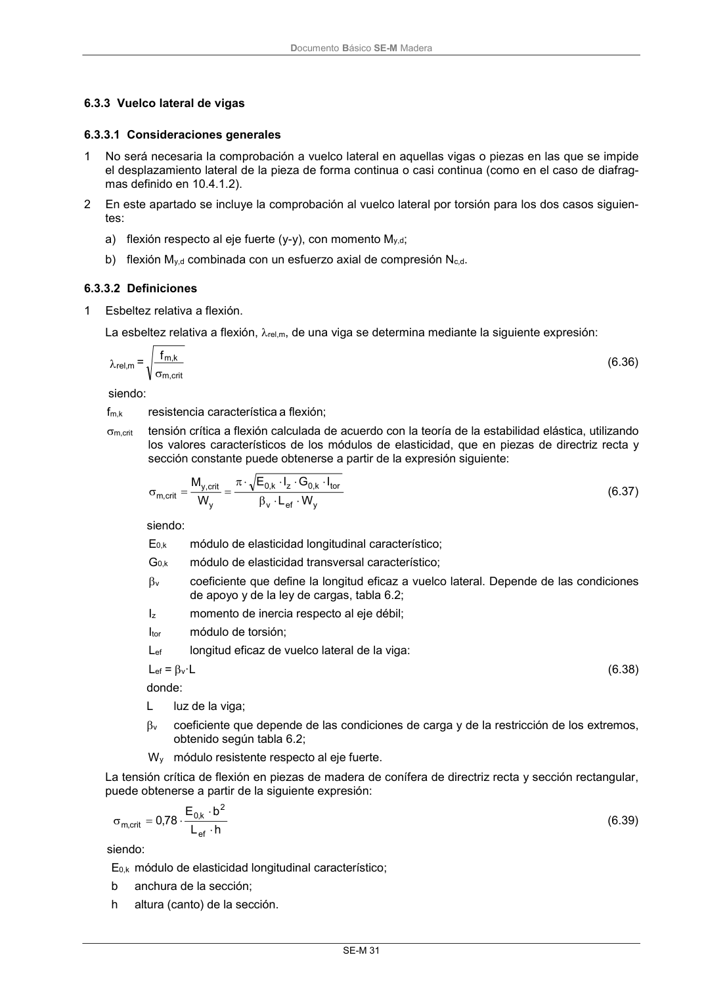
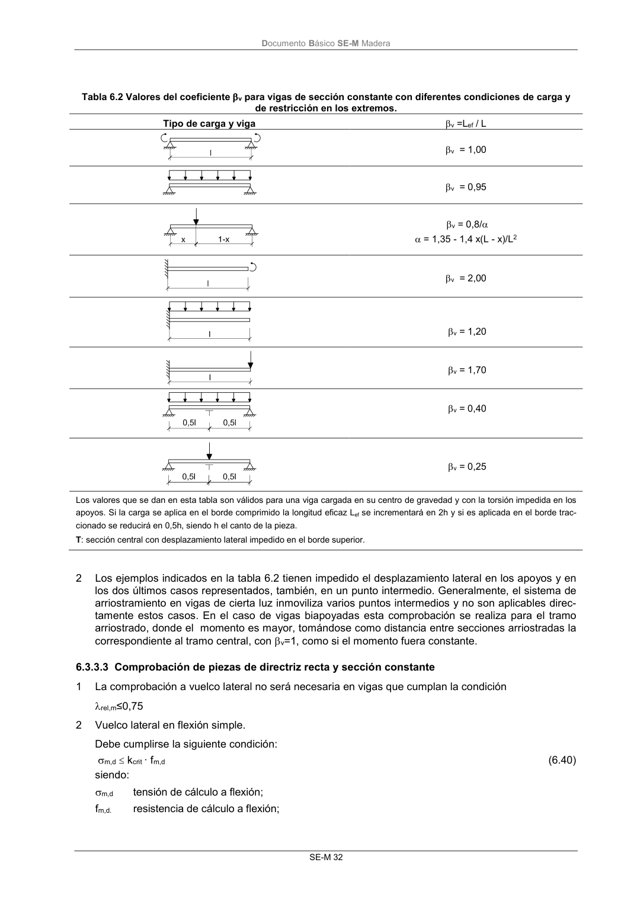

DB-SE-M Madera · edición 2019-12-20 · capa oficial
Documento DB-SE-M-oficial · SHA-256 del PDF 26b5819839ebfda78b0b119c5e76a0a37773b0d763c05688541870075df93718
Copia fiel del PDF fuente · Fuente oficial
Ficha de la disposición en la fuente oficial
Formatos: JSON del segmento · Markdown
sección constante puede obtenerse a partir de la expresión siguiente: y ef v tor k, 0 z k, 0 y crit ,y crit , m W L I G I E W M (6.37) siendo: E0,k módulo de elasticidad longitudinal característico; G0,k módulo de elasticidad transversal característico; v coeficiente que define la longitud eficaz a vuelco lateral. Depende de las condiciones de apoyo y de la ley de cargas, tabla 6.2; Iz momento de inercia respecto al eje débil; Itor módulo de torsión; Lef longitud eficaz de vuelco lateral de la viga: Lef = v·L (6.38) donde: L luz de la viga; v coeficiente que depende de las condiciones de carga y de la restricción de los extremos, obtenido según tabla 6.2; Wy módulo resistente respecto al eje fuerte. La tensión crítica de flexión en piezas de madera de conífera de directriz recta y sección rectangular, puede obtenerse a partir de la siguiente expresión: h L b E 78 ,0 ef 2 k, 0 crit , m (6.39) siendo: E0,k módulo de elasticidad longitudinal característico; b anchura de la sección; h altura (canto) de la sección. DocumentoBásico SE-M Madera SE-M 32 Tabla 6.2 Valores del coeficiente v para vigas de sección constante con diferentes condiciones de carga y de restricción en los extremos. Tipo de carga y viga v =Lef / L v = 1,00 v = 0,95 v = 0,8/ = 1,35 - 1,4 x(L - x)/L2 v = 2,00 v = 1,20 v = 1,70 v = 0,40 v = 0,25 Los valores que se dan en esta tabla son válidos para una viga cargada en su centro de gravedad y con la torsión impedida en los apoyos. Si la carga se aplica en el borde comprimido la longitud eficaz Lef se incrementará en 2h y si es aplicada en el borde trac- cionado se reducirá en 0,5h, siendo h el canto de la pieza. T: sección central con desplazamiento lateral impedido en el borde superior. 2 Los ejemplos indicados en la tabla 6.2 tienen impedido el desplazamiento lateral en los apoyos y en los dos últimos casos representados, también, en un punto intermedio. Generalmente, el sistema de arriostramiento en vigas de cierta luz inmoviliza varios puntos intermedios y no son aplicables direc- tamente estos casos. En el caso de vigas biapoyadas esta comprobación se realiza para el tramo arriostrado, donde el momento es mayor, tomándose como distancia entre secciones arriostradas la correspondiente al tramo central, con v=1, como si el momento fuera constante.

